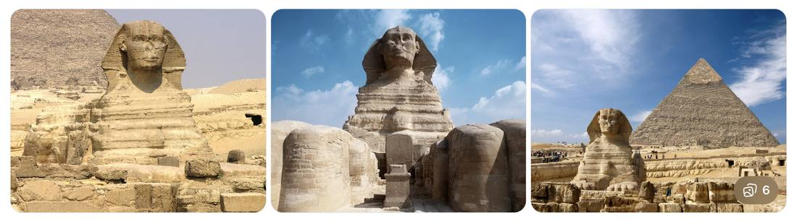

День 1 (чт) — Перелет ✈️ Валенсия → Рим → Каир (SPX) → отдых и акклиматизация 😌
- Вылет из Валенсии, прибытие в Гизу
- Такси?
- Заселение в отель с видом на пирамиды Steigenberger Pyramids Cairo
- Ночь в Гизе
День 2 (пт) — Пирамиды Гизы
🗺️ План осмотра:
- Великая пирамида Хеопса (можно внутрь — ограниченные билеты)
- Пирамида Хефрена
- Пирамида Менкаура
- Сфинкс
- Обзорная площадка на закате 🌇
🎟️ Билеты онлайн:
- Стоимость билетов около 80 евро на двоих с посещением пирамиды Хеопса
🔗 Официальный сайт покупки билетов (Giza Plateau Tickets)
💡 Советы:
- Вход в декабре открыт с 8:00 до 16:00
- Возьми воду и шляпу
Ночь в Гизе
День 3 (сб) — Новый Большой Египетский музей (GEM)
📍 Grand Egyptian Museum (GEM)
Один из крупнейших музеев мира, открывшийся у подножия плато Гизы.
Экспозиция Тутанхамона, коллекция фараонов и интерактивные залы.
🎟️ Билеты:
🔗 Официальный сайт Grand Egyptian Museum
💰 от ≈ 14 €
🕐 Режим работы: 9:00 – 17:00
💡 Советы:
- Можно дойти пешком от отелей у плато (10–15 мин)
- Билеты лучше купить заранее онлайн
- Кафе с видом на пирамиды прямо у входа
День 4 (вс) — ✈️ Вылет: 10:00 → Будапешт → Валенсия (18:55)